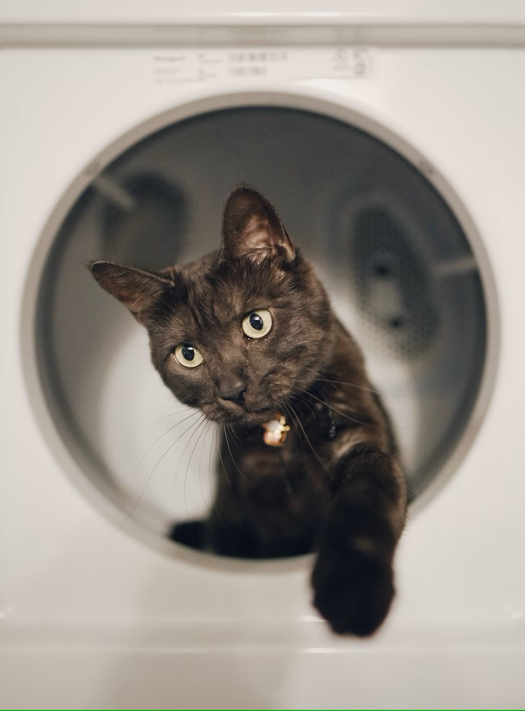
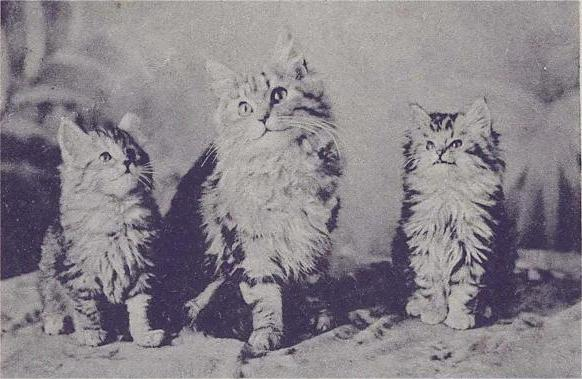
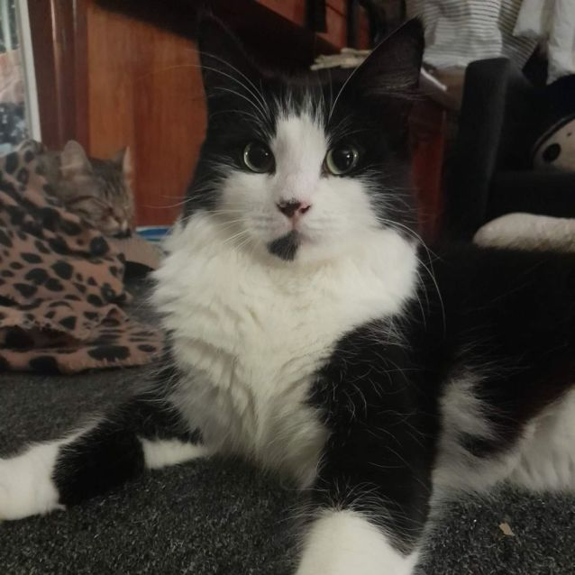
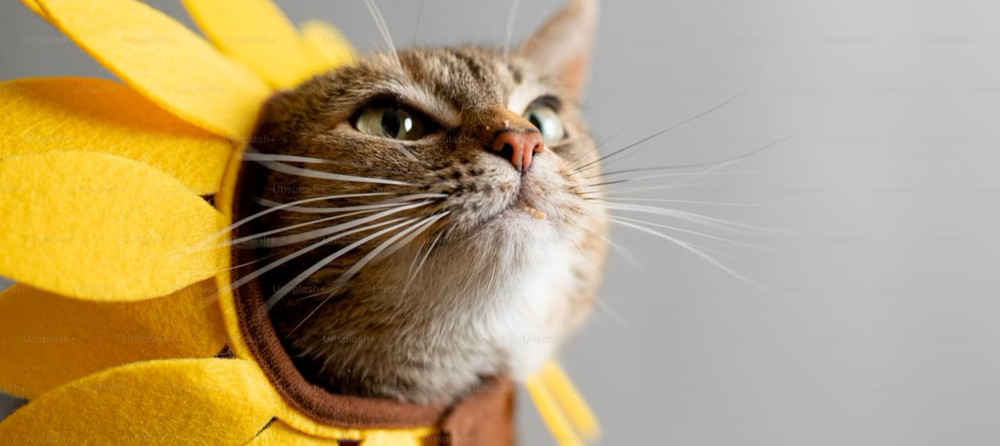

- MEOWMATES -
CAT NEWS
Cats associate human words with images, experiment suggests

A team of animal scientists at Azabu University in Japan has discovered that common house cats can associate human words with images without prompting or reward. The study tested 31 volunteer adult house cats, who were shown short animations with nonsensical words. The cats stared longer when hearing the word than during the original broadcast, and some even showed pupil dilation. This suggests that cats may be able to understand many of the words spoken to them. The researchers suggest that cats may associate words they hear from humans with objects in their environment, suggesting that they may be able to understand many of the words spoken to them.
Author: Bob Yirka
Publication Date: October 17, 2024
Cat and Dog first aid courses offered by charity
The Guernsey Society for the Prevention of Cruelty to Animals (GSPCA) is hosting two first aid courses for dogs and cats. The dog course will take place on 12 November, while the cat course will be held a week later. Both courses will run from 18:30 to 20:45 GMT and will teach participants how to handle emergencies with their pets. Participants must make a minimum donation of £25 to participate. The courses, which have been held annually for over seven years, have taught a variety of people about what to do in case of a pet's medical emergency. The GSPCA manager, Steve Byrne, said that the training helps pet owners learn and understand ways to save their pets' lives, as their worst fear is not knowing what to do if their four-legged friend has an injury.

Author: George Thorpe
Publication Date: November 3, 2024
CACC's New Outdoor Cat Policy

Chicago Animal Care & Control (CACC) has implemented a new intake policy for healthy outdoor cats, urging people to leave them where they are. The policy is a response to a surge in intake due to post-COVID and economic issues, but it could lead to unchecked growth of outdoor cat populations. PAWS Chicago is focusing on spay/neuter and trap/neuter/return (TNR) services to address pet overpopulation. The organization will prioritize spay/neuter surgeries for feral cats and owned pets in under-resourced communities, grow its Rescue Ready program, host virtual workshops to teach community members how to help when finding outdoor cats in winter, and focus on helping Chicago citizens who foster stray cats. The organization will continue to build innovative programs and seeks community support to help cats.
Author: PawsChicago Official
Publication Date: Oct 31, 2024
Cat brains age like ours — and could help scientists to understand cognitive decline
Author: Heidi Ledford
Published Date: 05 November 2024
Cats know how to obtain food without labor, shelter without confinement, and love without penalties.
– W. L. George –
Postcards are the email of their day': How cat memes went viral 100 years ago
In the age of social media, cats have been at the center of social change for centuries. As soon as a new communications technology emerges, people will use it to make pictures of cats, showing not only the special relationship between humans and their pets but also the changing ways that humans relate to one another. Cat memes in their modern form date back to the 1990s, when email first allowed bored office workers and friends to message each other funny felines. The demand for this content was so high that entire websites like ICanHasCheezburger sprung up to showcase the best e-cats, aggregating popular pet videos and cat memes.
The Edwardian postcard, printed in 1869, functioned like social media today. Postcards were cheaper, faster, and more convenient than a letter, used to share random musings, plan logistics for where and when to meet, tell jokes, and post cat pictures. During this era of postcard mania, uncountable millions of postcards circulated, and it was a perfect moment for cats to take over the new medium.
Postcard culture intersected with politics, with some of the most famous postcard cats associated with the Suffrage movement. Postcards were sold as fundraising for social causes, but postcard-making companies also pounced on any opportunity to make content around issues people cared about.
In conclusion, understanding the cat postcards of the early 20th Century might help us understand social media today. Cats have always been present in media history, and their depictions have always been a part of our visual culture.
Author: Aidan Walker
Published Date: 25 September 2024
Nutritional needs of geriatric cats – time for a change?
With cat lifespans lengthening, there is increasing interest in how nutrition can affect the feline aging process.
A number of age-related physiological changes respond to nutritional intervention, such as immune function and cognitive changes. It follows that tailored nutrition for senior cats is desirable.
Aging is a complex, multifactorial process. Cats are generally considered senior when they reach 8 to 10 years of age. A 2023 study led by the UK’s Waltham Petcare Science Institute used disease diagnosis data to define 5 life stages in cats (youth: 1-4 years; early midlife: 5-9 years; late midlife: 10-11 years; senior: 12-13 years; and super senior: 14+ years). A cat’s physiology and metabolism alter as they age, with changes including increasing levels of pro-inflammatory markers, insulin resistance and loss of muscle mass and strength.
Author: Sarah-Jane Moiler
Publication Date: November 22 2024
Why it’s time to pay attention to cats

Insights from a US survey show that pet food manufacturers can seize new market opportunities by meeting cat owners’ rising demands, especially in relation to product choice, quality and healthfulness.
Given the recent decline in the US dog population, it’s no surprise that marketers are turning their attention to the pet industry’s other main segment: cats.
According to a 2024 survey by market research company Packaged Facts, 43% of cat owners believe that they are treated like second-class citizens by pet food manufacturers and would like to see the same product selection and quality as dog owners.
When asked about the strongest influences on their most recent cat food purchase, the majority of cat food buyers select: ‘My pet likes it/will eat it’. Trust in a specific brand is also an important factor, while price rounds out the top 3.
Although many cat owners trust their veterinarian for information about cat food, fewer rank vets among the top influences on their actual purchases.
Aurthor: Shannon Landry
Publication Date: November 22 2024
The pet I’ll never forget: Osci, the cat who rescued me when I needed him most
Deep into Covid, my best friends convinced me it would improve my life immeasurably to adopt a cat. A few days later, a feline mugshot jumped out at me from the rescue website. A childhood love of Postman Pat had started a family tradition of black-and-white cats, and Oscar fitted the bill with his tuxedo markings. His tomcat cheeks, ear with a chunk missing and neck resembling an Elizabethan ruff sealed the deal.
A month after I adopted Osci, my best friend died. It was sudden and unexplained. After getting the call, I staggered to a friend’s house and sat in her garden to observe social distancing. Back home, Osci was waiting. I scooped him up and sobbed into his ruff. He didn’t leave my side in the coming weeks. As I lay unmoving on the sofa, he would sleep on my chest with a paw resting on my face. His purr was the only thing that calmed my nervous system enough for me to sleep. Six weeks on, the funeral took place, with 20 of us sobbing into our masks.
Two days later, Osci went missing. His despisal of other cats got the better of him one night and he chased an intruder out of the garden, getting lost in the process. When I realised he had gone, it felt like something snapped inside my brain. I pounded the streets, knocked on doors, posted all over social media. I could not fathom how to get through this without my de facto therapy cat.
Author: Bethan L Evans
Published Date: November 18 2024
Cat who visits Aldi becomes social media star
A pet cat who "likes Aldi" has become a social media star in his home town thanks to his many adventures.
Raymond, a three-year-old ginger tom, stalks supermarket aisles, lets himself into people's homes for visits and even sneaks into hotel bedrooms for naps.
He has gained hundreds of social media followers in a matter of weeks, who share pictures and stories about his escapades around Llangollen, Denbighshire.
"He's one of a kind," said Raymond's owner, Rebecca Palombella.
Raymond's various adventures prompted Ms Palombella to set up a Facebook page for him.
"I thought at least I can keep track of him," she said.
"People were constantly messaging me saying 'is this your cat?'
"They don't message me anymore because they know who Raymond is now.
"So at least I know if I need him to come home I can just go and grab him.”
Author: Rosie Mercer
Publication Date: November 20 2024
Cats are better at word association than human babies are, study finds
Language is the most important tool humans use to communicate. But the ability to comprehend speech is not unique to Homo sapiens. Some apes associate spoken words with written symbols or pictures, while African gray parrots can understand and respond to spoken instructions. Dogs, meanwhile, have been trained to understand and respond to simple vocabulary.
However, we know far less about humans' other major companion, cats. "Cats can definitely recognize the sound of words coming from people, and more and more studies prove that cats rely on interaction with humans in problem-solving," Dr. Carlo Siracusa, a veterinary behaviorist at the University of Pennsylvania, told Live Science. There is even limited evidence that cats can respond to pointing, and research in the past five years has shown that cats can recognize not only their own names but also those of familiar humans and animals. But can they associate words and objects more generally?
"Some cats even gazed at the screen with their pupils dilated during the 'switched' condition," Takagi told Science magazine. "It was cute to see how seriously they participated in the experiment.”